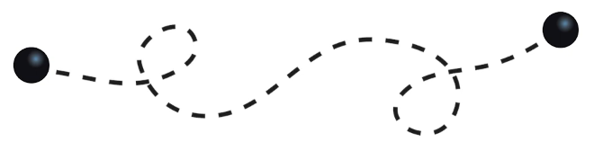

Dense Optical Tracking: Connecting the Dots

Abstract
Recent approaches to point tracking are able to recover the trajectory of any scene point through a large portion of a video despite the presence of occlusions. They are, however, too slow in practice to track every point observed in a single frame in a reasonable amount of time. This paper introduces DOT, a novel, simple and efficient method for solving this problem. It first extracts a small set of tracks from key regions at motion boundaries using an off-the-shelf point tracking algorithm. Given source and target frames, DOT then computes rough initial estimates of a dense flow field and visibility mask through nearest-neighbor interpolation, before refining them using a learnable optical flow estimator that explicitly handles occlusions and can be trained on synthetic data with ground-truth correspondences. We show that DOT is significantly more accurate than current optical flow techniques, outperforms sophisticated "universal" trackers like OmniMotion, and is on par with, or better than, the best point tracking algorithms like CoTracker while being at least two orders of magnitude faster. Quantitative and qualitative experiments with synthetic and real videos validate the promise of the proposed approach. Code, data, and videos showcasing the capabilities of our approach are available in the project webpage.

Video
Citation
@article{lemoing2023dense,
title = {Dense Optical Tracking: Connecting the Dots},
author = {Guillaume Le Moing and Jean Ponce and Cordelia Schmid},
journal = {arXiv preprint},
year = {2023}
}
Acknowledgments
This work was granted access to the HPC resources of IDRIS under the allocation 2021-AD011012227R2 made by GENCI. It was funded in part by the French government under management of Agence Nationale de la Recherche as part of the ``Investissements d’avenir'' program, reference ANR-19-P3IA-0001 (PRAIRIE 3IA Institute), and the ANR project VideoPredict, reference ANR-21-FAI1-0002-01. JP was supported in part by the Louis Vuitton/ENS chair in artificial intelligence and a Global Distinguished Professorship at the Courant Institute of Mathematical Sciences and the Center for Data Science at New York University.
Copyright Notice
The documents contained in these directories are included by the contributing authors as a means to ensure timely dissemination of scholarly and technical work on a non-commercial basis. Copyright and all rights therein are maintained by the authors or by other copyright holders, notwithstanding that they have offered their works here electronically. It is understood that all persons copying this information will adhere to the terms and constraints invoked by each author's copyright.